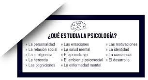

Psico significa alma y logia estudio
¿Que es?
La psicología es el estudio científico de los procesos mentales y del comportamiento de los seres humanos, y
sus interacciones con el ambiente.

La psicología busca describir sensaciones, emociones, pensamientos, percepciones y otros estados de la
conducta humana.
La psicología cuenta con diferentes ramos de aplicación como lo es:
• La psicología clínica
Se encarga de la investigación, evaluación, diagnostico, tratamiento, rehabilitación y prevención, sobre las
enfermedades de salud mental.
• La psicología educativa
Su objetivo de estudio es como de produce el aprendizaje humano.
• La psicología organizacional
Estudia el comportamiento humano en el ámbito laboral, se encarga de velar
por los intereses de los colaboradores y de las organizaciones, ayuda a potenciar el rendimiento y la
productividad de trabajadores por medio de estrategias, como motivaciones e incentivos innovadores, con el
fin de favorecer el desarrollo personal y el crecimiento profesional del empleado.
• La psicología jurídica
Comprende el estudio, explicación, promoción, evaluación, intervención, prevención, asesoramiento y/o
tratamiento de aquellos fenómenos psicológicos, conductuales y relacionales que inciden en el comportamiento
legal.
• La psicología comunitaria
El objeto de estudio de la Psicología Comunitaria es la comunidad y el desarrollo comunitario, es una
psicología de la acción para la transformación, en la cual investigadores y sujetos, están del mismo lado en
la relación de estudio, pues ambos forman parte de la misma situación.
• Psicología del deporte
El objetivo es implementar estrategias para hacer que el rendimiento psicológico y
físico de los deportistas los lleve a mejorar sus resultado
• Psicología social La psicología social estudia
la manera en cómo piensa, siente y actúa el ser humano influido por la presencia o ausencia de otras
personas en su medio ambiente.